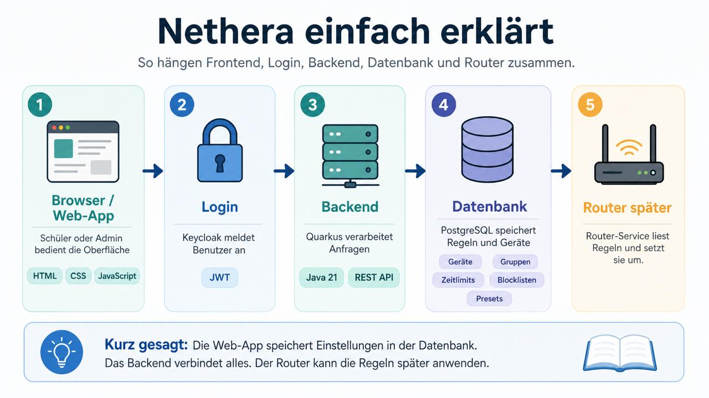

Agiles Arbeiten in Sprints
Scope-Creep ist real – regelmäßige Sprint-Reviews helfen, Prioritäten zu setzen.
Nethera
Netzwerk-Management für zu Hause
4CHITM · HTL Leonding · Schuljahr 2025/26
Oktober 2025 – Juni 2026
Tobias Huemer · Deniz Bernecker · Nico Hofer · Manuel Freihaut · Moritz Kapeller
Das Team
TH
Tobias Huemer
~146h
DB
Deniz Bernecker
~166h
NH
Nico Hofer
~160h
MF
Manuel Freihaut
~150h
MK
Moritz Kapeller
~153h
Stunden kumuliert aus Clockify, Sprints 1–9
Was ist Nethera?
Nethera ist eine webbasierte Netzwerk-Management-App für Heimnetzwerke – gebaut auf einem OpenWRT-Router und gesteuert über einen Quarkus-Backend-Server. Eltern können Zeitlimits, DNS-Filter und Gerätezugänge komfortabel per Browser verwalten.
Browser
→
Login (Keycloak)
→
Backend (Quarkus)
→
Datenbank (PostgreSQL)
→
Router (OpenWRT)
Features
Zeitlimits
Gerätegruppen
Blocklisten
DNS-Filter
Werbedomänen-Blockierung
OpenWRT
Device Presets
Traffic-Statistiken
Keycloak Auth
dnsmasq
Wie es funktioniert

5-Schritt-Flow: Browser → Login → Backend → Datenbank → Router
Tech-Stack
Frontend
- HTML / CSS / JavaScript
- Vanilla JS (kein Framework)
- Iframe-SPA Architektur
Backend
- Quarkus 3
- Java 21
- JAX-RS / Jackson
- @Scheduled Sync
Datenbank
- PostgreSQL 15
- JPA / Hibernate
- Docker Container
Auth
- Keycloak 26
- OIDC / OpenID Connect
- JWT Bearer Token
Router
- OpenWRT
- dnsmasq (DNS/DHCP)
- OpenVPN
- BusyBox / sh
Tools
- SSH / sshj 0.38
- Git (Conventional Commits)
- OpenSpec
- Clockify
Router-Kommunikation
Technisches Highlight: Wie Nethera Daten vom Router holt
Quarkus
@Scheduled
alle 30s
Java Library
sshj
net.schmizz.sshj
Router
OpenWRT
SSH Key-Auth
Datenquellen
/tmp/dhcp.leases
/proc/net/arp
iw station dump
Speicherung
PostgreSQL
DB-first Ansatz
Verwendete Technologien
sshj 0.38
dnsmasq
OpenVPN
BusyBox/sh
Key-Auth (kein Passwort)
@Scheduled (Quarkus)
DB-first statt Router-first
Kein Router-Request bei jedem Seitenaufruf — Daten werden periodisch gecacht.
Projektverlauf
Commits pro Monat (max = 34)
Sprint 10 Review
Letzter Sprint – abgeschlossene Features
Frontend
- Dashboard-Redesign
- Zeitlimits-UI
- Geräte- / Gruppen-Verwaltung
- Blocklists
- Werbedomänen-Blockierung
- Device Presets
- Neue Status-Seite
- Traffic-Statistiken
- Konfigurationsseite
- Mein Account
Backend
- Neue DB-Tabellen
- DB-first Ansatz
(kein Router-Request bei jedem Request) - Quarkus @Scheduled Sync-Service
Zahlen & Fakten
181
Commits
~772h
Stunden gesamt
9+
Sprints
9
Monate
~96
Werktage
5
Teammitglieder
9
App-Seiten
~180h
Sprint 8 (längster)
Okt '25
Start
Jun '26
Ende
OpenWRT
Router
Keycloak
Auth
Zeitaufzeichnung
Clockify – kumulierte Stunden, Sprints 1–9 (pro Person)
Deniz Bernecker
~166h
Nico Hofer
~160h
Moritz Kapeller
~153h
Manuel Freihaut
~150h
Tobias Huemer
~146h
~772h gesamt · Sprints 1–9 · ~96 Werktage · ~19 Werktage/Person
Was haben wir gelernt?
-
1
-
2Router-Integration ist komplex
SSH / dnsmasq / OpenWRT erfordert Geduld — Dokumentation ist dünn, Debugging ist intensiv. -
3DB-first statt Router-first
Periodischer Sync verbessert Performance und Stabilität deutlich gegenüber Live-Requests. -
4Git-Disziplin zahlt sich aus
Conventional Commits + Feature-Branches machen Team-Arbeit über Semester hinweg möglich. -
5Teamkoordination über Semester
Klare Strukturen, OpenSpec und regelmäßige Abstimmung ermöglichen verteilte Entwicklung.
Danke fürs Zuhören!
Fragen?
Tobias Huemer · Deniz Bernecker · Nico Hofer · Manuel Freihaut · Moritz Kapeller
181 Commits
~772h
9 Sprints
9 Seiten
OpenWRT
Quarkus 3
Keycloak 26
PostgreSQL 15